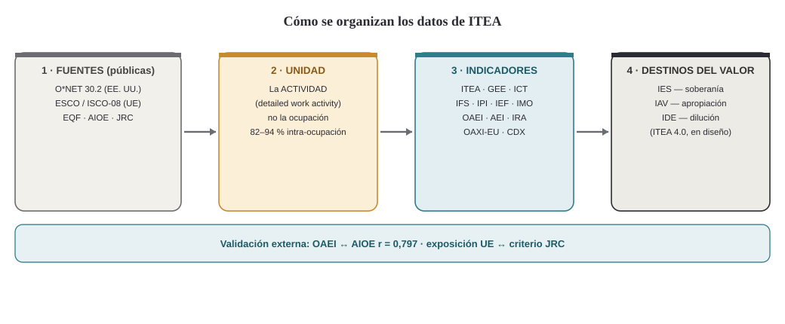

Programa ITEA · 2026 · Documentación
Guía de datos y glosario
Qué significan los datos de ITEA, en qué se fundamentan y para qué sirven — con un diccionario de términos.
Esta guía permite leer los datos de ITEA con sentido. No es el paper —el tratamiento formal está en los artículos citados al final—; es la documentación que explica qué mide cada dato, sobre qué se construye y con qué propósito.
1 · Qué mide ITEA, y para qué
ITEA mide qué le ocurre al trabajo —y al conocimiento que lo sustenta— cuando entra la IA. No solo dice "qué puestos están en riesgo": distingue si la actividad se automatiza (la hace la máquina), se aumenta (el humano rinde más y la conserva) o se expropia (permanece, pero el capital humano que la sustentaba queda capturado).
La unidad de análisis es la actividad (detailed work activity), no la ocupación: la mayor parte de la variación relevante vive dentro de la ocupación. Fuentes, todas públicas: O*NET (EE. UU.), ESCO/ISCO-08 y EQF (Europa).

2 · Los indicadores del marco (v3.0)
Cada ocupación recibe una puntuación en estos indicadores, todos públicos y reproducibles (código en R y Python).
| Sigla | Nombre | Qué significa | Fundamento |
|---|---|---|---|
| ITEA | Índice de Exposición a la Automatización | Exposición global del trabajo a la IA | Agregación por z-score (formativo) |
| OAEI | Índice Ocupacional de Expropiabilidad Algorítmica | Exposición a la captura del saber, no solo a la sustitución | Multiplicativo (canónico) + aditivo (alternativo) |
| AEI | Índice de Expropiabilidad Algorítmica | Referencia interna de expropiabilidad | Auxiliar |
| IRA | Índice de Resiliencia Adaptativa | Capacidad de resistir/adaptarse | 0,6·CA + 0,4·IRO_residual (triple residualización) |
| ICT | Índice de Complejidad Técnica | Complejidad técnica de la actividad | Formativo |
| IFS | Índice de Fricción Social | Peso de la interacción social | Reflectivo |
| IPI | Índice de Presencia Interpersonal | Grado de presencialidad | Formativo |
| IEF | Índice de Especificidad Funcional | Especificidad de la función | Reflectivo |
| GEE | Gradiente Educación-Experiencia | Nivel de cualificación | Calibrado (OLS + ordinal) |
| IMO | Índice de Mutación Ocupacional | Ritmo de cambio de la ocupación | Modelo hurdle |
Validación externa: OAEI correlaciona con el benchmark independiente AIOE (Felten, Raj y Seamans, 2021) a r = 0,797 sobre 769 ocupaciones comunes — ancla el índice en una medida ajena y desactiva la sospecha de circularidad.
3 · La línea europea (ITEA 4.0-beta)
| Sigla | Nombre | Qué significa | Propósito |
|---|---|---|---|
| OAXI-EU | Expropiabilidad europea | Superficie codificable expuesta a captura | Parte distintiva: exposición × codificabilidad |
| IEA-EU | Índice de Exposición (UE) | Exposición a la IA en taxonomía europea | Validado contra el criterio JRC |
| GEE-EU | Gradiente de cualificación (EQF) | Cualificación anclada en el Marco Europeo | Ancla europea, sin depender del dato de EE. UU. |
| CDX | Dimensión de codificabilidad | En qué medida el saber se reduce a reglas/datos | Eje propio, separado de la exposición |
Beta. Resultados preliminares, no revisados por pares; la release estable del marco sigue siendo v3.0.
4 · La capa conceptual de ITEA 4.0 (en diseño)
La revisión descompone el índice único en tres, porque fusionaba un evento con sus dos consecuencias. Se documenta el propósito; la operacionalización está en preparación.
| Sigla | Nombre | Qué medirá |
|---|---|---|
| Expropiabilidad | Potencial observable | La superficie codificable expuesta (ya medible vía OAXI) |
| IES | Expropiación de Soberanía | El evento: la toma del derecho a decidir la explotación |
| IAV | Apropiación de Valor | La renta del juicio codificado capturada por la firma |
| IDE | Dilución de Exclusividad | La escasez que se dispersa al mercado |
| CI | Codificabilidad | externalización × internalización, condicionada a incumbencia |
5 · Glosario de términos

- No rivalidad
- El uso de un saber por una parte no merma el de otra: copiarlo no se lo quita a su origen. Base de que el saber "no se desposee".
- Posesión epistémica
- Saber algo. Hecho, no derecho: no rival, inalienable — no se expropia.
- Soberanía deóntica
- El derecho a decidir quién explota un saber y cómo. Potestad jurídica: rival y alienable — sí se toma y se retiene.
- Expropiación (algorítmica)
- La captura no compensada de la soberanía sobre la explotación del saber codificado. El evento.
- Apropiación
- Consecuencia: la firma captura la renta del juicio codificado (Teece). Remedio: canon θ·V.
- Dilución
- Consecuencia: la exclusividad se dispersa al mercado. Remedio: instrumento tipo Pigou.
- Expropiabilidad
- El potencial observable = exposición × codificabilidad. Lo que mide el índice empírico (no el evento).
- Codificabilidad (CI)
- Grado en que un saber se reduce a reglas/datos y se reproduce en un modelo. CI = externalización × internalización.
- Almacenado ≠ codificado
- Almacenado: explícito humano latente (archivos inertes). Codificado: ha cruzado a un sistema que sabe leerlo. La GenAI activa un depósito que las olas anteriores llenaron sin saber leer.
- Incumbencia
- Criterio del daño: hay expropiación cuando el saber se extrae de un poseedor previo (tácito→explícito), no cuando se crea ex novo.
- Los dos sujetos
- Trabajador (juicio experto que poseía → expropiación) y consumidor (conducta agregada que nunca poseyó → extracción).
- Los tres modos de transferencia
- Trasplante exógeno (paquete talla única, Siebel → fricción); préstamo modular/benchmarking (Xerox → dilución); cultivo endógeno (corpus propio → apropiación).
- θ·V
- Compensación propuesta: canon de licencia bajo regla de responsabilidad, ni restitución ni impuesto pigouviano.
- Actividad / tarea / ocupación
- Tarea: acción concreta. Actividad (DWA): unidad libre de ocupación. Ocupación: agregado (SOC/ISCO). ITEA mide en la actividad.
- Siglas de fuentes
- O*NET (base ocupacional EE. UU.), ESCO/ISCO-08 (clasificación UE e internacional), EQF (cualificaciones UE), DWA (actividad), AIOE (benchmark externo), JRC (criterio de validación europeo).
6 · Enlaces
Artículo conceptual — DOI (todas las versiones): 10.5281/zenodo.20424899
Manuscrito empírico — DOI: 10.5281/zenodo.20834742
Framework (código y datos) — DOI: 10.5281/zenodo.19578915
El relato y el porqué de cada decisión — ITEA_Relato_y_Decisiones.html
Acceso a datos (índices a nivel tarea/ocupación): bajo solicitud — alb.valencia@gmail.com